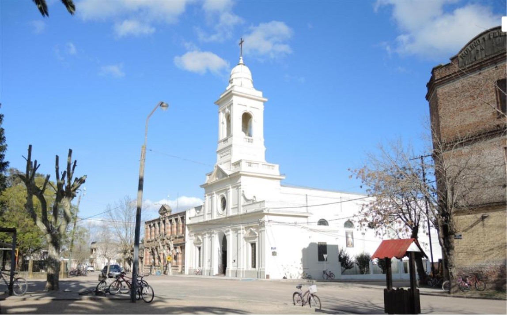
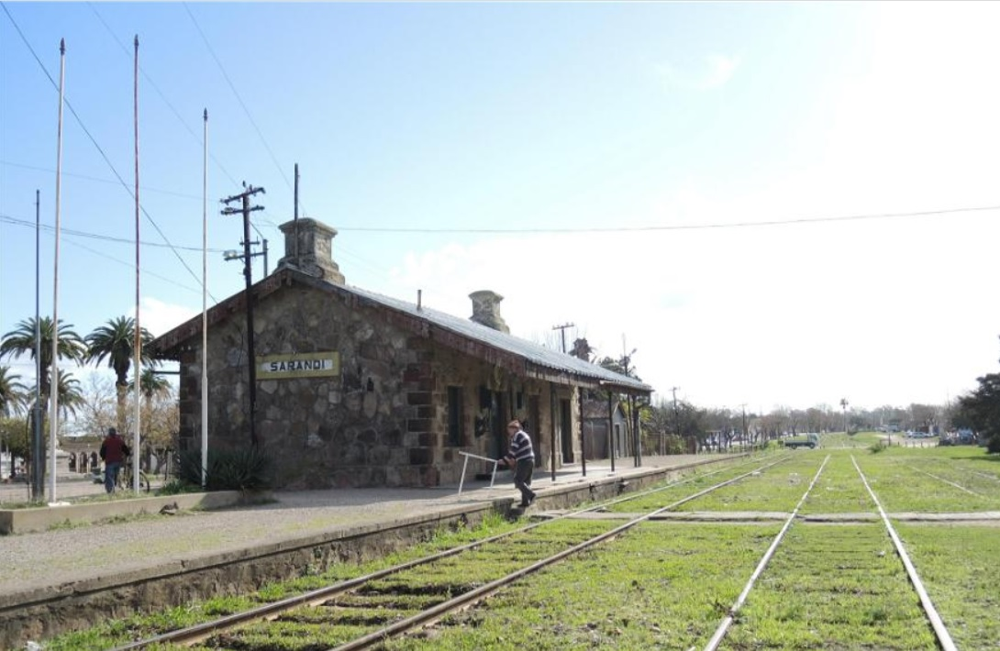

Galería

Nuestra Señora del Pilar
Ver edificios coloniales no es de lo más común en Uruguay. Así que es llamativo encontrarse con que la iglesia Nuestra Señora del Pilar de Sarandí Grande, es un ejemplar todavía en pie de esta época. En sus naves espera al 15 de mayo el santo patrono de la ciudad San Isidro labrador

Monumento a la Batalla de Sarandí
Ubicado en la Plaza Dr. Alejandro Gallinal de la ciudad de Sarandí Grande (Florida), se encuentra el Monumento a la Batalla de Sarandí, obra del escultor uruguayo José Luis Zorrilla de San Martín. Inaugurado en 1923.

Estación de Trenes
La estación ferrocarril hizo necesaria la fundación del poblado. Ya no embarcan pasajeros desde aquí, sin embargo sus oxidadas instalaciones determinan la entrada al pueblo, imprimiéndole un temperamento sosegado y hasta melancólico al lugar.